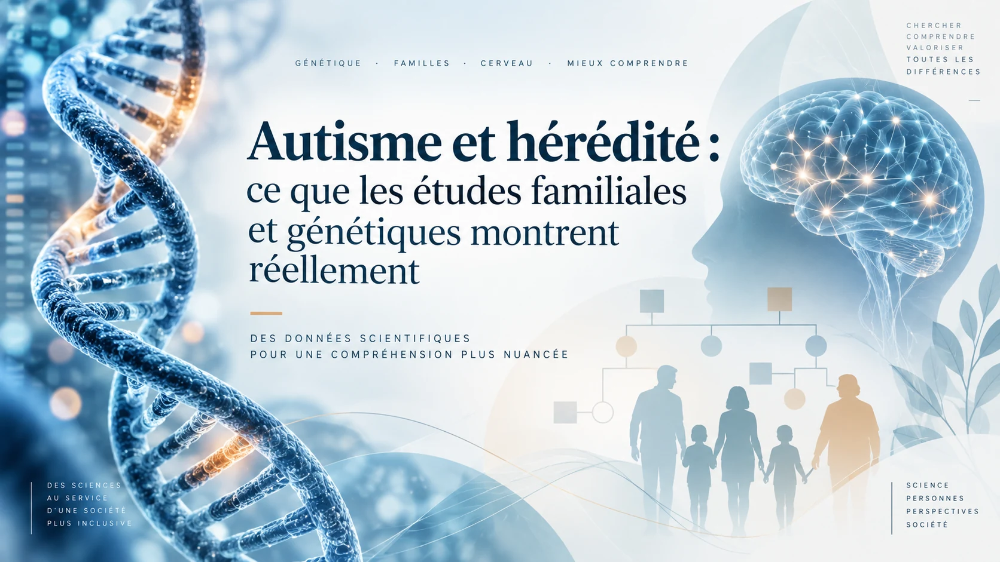

Ce texte a d’abord été publié sur LinkedIn. Il est désormais hébergé directement sur Les Esprits Pluriels afin de rester accessible sans compte externe.
Lorsqu’un trouble du spectre de l’autisme apparaît dans une famille, la question d’une possible transmission entre générations se pose souvent. Les données accumulées depuis plusieurs décennies montrent que les facteurs génétiques contribuent fortement à la susceptibilité au TSA. Cette contribution repose sur une architecture complexe, dans laquelle interviennent des milliers de variations communes, des variants rares hérités, des mutations apparues de novo chez l’enfant et des modifications structurelles du génome dont certaines deviennent accessibles aux techniques modernes de séquençage.
Parler d’hérédité dans l’autisme revient à décrire une susceptibilité biologique distribuée entre de nombreux facteurs, dont les combinaisons peuvent produire des profils très différents au sein d’une même famille.
Une héritabilité élevée, dont le sens doit être bien compris
L’une des grandes études consacrées à cette question a été publiée en 2019 dans JAMA Psychiatry. À partir des données de 2 001 631 personnes, dont 22 156 avaient reçu un diagnostic de TSA, provenant du Danemark, de Finlande, de Suède, d’Israël et d’Australie occidentale, les chercheurs ont estimé la contribution des facteurs génétiques et environnementaux aux différences de susceptibilité observées dans la population. L’estimation médiane de l’héritabilité atteignait 80,8 %, avec un intervalle de confiance compris entre 73,2 et 85,5 %. Les estimations nationales variaient davantage, de 50,9 % en Finlande à 86,8 % en Israël, avec des intervalles de confiance particulièrement larges dans certains pays. Cette variation rappelle que l’héritabilité dépend d’une population et d’un modèle statistique. Elle ne constitue pas une constante biologique universelle. Les effets maternels estimés étaient faibles, entre 0,4 et 1,6 %.
Une méta-analyse d’études de jumeaux publiée en 2016 aboutissait elle aussi à des estimations élevées, comprises entre 64 et 91 % selon les modèles retenus. Les corrélations observées étaient nettement plus fortes chez les jumeaux monozygotes que chez les dizygotes, l’un des principaux arguments en faveur d’une contribution génétique importante.
Des travaux plus récents affinent cette image. Une étude publiée en 2024 dans JAMA Psychiatry, portant sur 1 047 649 personnes en Suède, estimait l’héritabilité du TSA à environ 80 % dans l’ensemble de la population. Dans le modèle sexospécifique retenu par les auteurs, elle atteignait 87,0 % chez les hommes et 75,7 % chez les femmes, avec une différence estimée à 11,3 points. Cette différence pourrait traduire certaines variations dans les composantes de la susceptibilité selon le sexe, sans en établir la nature.
Ces observations ont alimenté l’hypothèse d’un effet protecteur féminin. Plusieurs études constatent qu’en moyenne les filles et les femmes autistes présentent une charge plus importante de certaines catégories de variants associés au TSA. En 2022, Wigdor et ses collègues ont observé que les frères et sœurs de filles autistes présentaient plus souvent un TSA que ceux de garçons autistes. Dans les cohortes Simons Simplex et SPARK, les mères d’enfants autistes portaient par ailleurs un score polygénique légèrement supérieur à celui des pères. L’écart atteignait 0,08 écart-type de score polygénique, soit un effet de faible amplitude, détectable sur de grands effectifs.
L’hypothèse propose qu’une charge génétique plus importante serait en moyenne nécessaire pour atteindre un seuil diagnostique chez les femmes. Le mécanisme responsable demeure incertain. Les différences de présentation clinique, les pratiques diagnostiques et d’autres facteurs biologiques ou développementaux peuvent contribuer aux écarts observés entre les sexes. Les résultats familiaux apportent des indices compatibles avec cette hypothèse plutôt qu’une démonstration de son mécanisme.
Le sens statistique du mot « héritabilité » mérite une attention particulière. Une héritabilité de 80 % n’attribue pas 80 % de l’autisme d’une personne à ses gènes. Elle décrit, dans une population et dans les conditions étudiées, la proportion de la variation de susceptibilité associée aux différences génétiques entre individus. Sa valeur dépend de la population, de l’environnement et du modèle statistique considérés.
Cette estimation renseigne sur les différences observées à l’échelle d’un groupe. Elle ne décompose pas les causes du TSA chez une personne précise et ne fournit pas une probabilité individuelle de diagnostic. Une forte héritabilité peut coexister avec une grande diversité de trajectoires individuelles.
Les études familiales révèlent un gradient de parenté
Les recherches portant directement sur les familles apportent un autre type d’information. Une vaste étude internationale publiée en 2019 a analysé plus de 2,5 millions de naissances enregistrées en Californie, au Danemark, en Finlande, en Israël, en Suède et en Australie occidentale afin d’examiner la récurrence du TSA selon le degré de parenté.
Pris dans son ensemble, le risque de TSA après un frère ou une sœur aîné autiste était environ 8,4 fois supérieur à celui observé dans la population de référence. Les analyses détaillées faisaient apparaître un gradient selon le degré de parenté, avec un risque relatif d’environ 9,3 chez les frères et sœurs biologiques complets, 4,8 chez les demi-frères et demi-sœurs et 1,9 chez les cousins germains.
Plus la parenté génétique est étroite, plus l’agrégation familiale observée est forte. Ce gradient pris isolément ne départage pas tous les mécanismes possibles, puisque les membres d’une famille partagent aussi certaines caractéristiques environnementales. Sa concordance avec les études de jumeaux, les estimations d’héritabilité et les résultats de la génétique moléculaire renforce l’hypothèse d’une contribution génétique substantielle.
Les études prospectives menées auprès des jeunes frères et sœurs d’enfants autistes rendent cette agrégation familiale plus concrète. En 2024, le Baby Siblings Research Consortium a publié le suivi de 1 605 enfants ayant au moins un frère ou une sœur aîné autiste. À l’âge de trois ans, 20,2 % avaient eux-mêmes reçu un diagnostic de TSA. Cette proportion était statistiquement comparable aux 18,7 % rapportés dans une étude antérieure de 2011.
L’histoire familiale modifiait sensiblement cette récurrence. Après prise en compte du sexe de l’enfant, le modèle estimait un taux de 21,2 % dans les familles simplex, où un seul enfant plus âgé était concerné, et de 36,9 % dans les familles multiplex, où plusieurs enfants l’étaient déjà. La récurrence atteignait 25,3 % chez les garçons et 13,1 % chez les filles. Elle était aussi significativement supérieure lorsque l’aîné autiste était une fille. Ce dernier résultat rejoint les observations familiales qui sous-tendent l’hypothèse de l’effet protecteur féminin évoquée plus haut.
Ces chiffres demandent un contexte précis. Le Baby Siblings Research Consortium suit une population sélectionnée parce qu’un enfant de la famille est déjà autiste, avec un suivi clinique intensif dans un réseau de recherche spécialisé. Le taux de 20,2 % décrit cette cohorte à risque familial élevé et une évaluation diagnostique réalisée à trois ans. Il ne correspond ni à la fréquence du TSA dans la population générale ni à une probabilité directement applicable à chaque famille.
Une architecture génétique faite de multiples contributions
La génétique moléculaire aide à comprendre pourquoi les profils familiaux peuvent différer autant. Une partie de la susceptibilité repose sur un très grand nombre de variants communs dont chacun exerce un effet faible. Leur contribution cumulée forme ce que les chercheurs appellent le risque polygénique. D’autres variants sont beaucoup plus rares et peuvent exercer des effets plus importants. Certains sont hérités, tandis que des mutations de novo apparaissent chez l’enfant sans être présentes sous la même forme chez ses parents.
Une étude publiée dans Nature Genetics en 2022 a examiné ces différentes contributions dans un vaste échantillon familial. Les mutations de novo, les variants rares hérités et le risque polygénique étaient associés à différentes dimensions des profils observés chez les enfants et leurs parents. Les auteurs décrivent un spectre phénotypique associé à plusieurs catégories de facteurs génétiques agissant sur le développement.
Cette diversité explique en partie pourquoi l’hérédité familiale ne ressemble pas à la transmission simple d’un caractère déterminé par un seul gène. Un parent peut transmettre certaines variantes contribuant à la susceptibilité sans présenter lui-même un TSA. Des facteurs provenant des deux lignées parentales se recombinent différemment chez plusieurs enfants. Dans d’autres situations, une mutation de novo ou un variant rare à effet important peut peser davantage dans le profil observé.
Le mosaïcisme somatique ajoute une autre possibilité. Certaines mutations apparaissent après la fécondation, au cours des divisions cellulaires, et se retrouvent uniquement dans une fraction des cellules de l’organisme. Leur distribution dépend du moment où elles surviennent pendant le développement et des lignées cellulaires qui en dérivent.
Les analyses de grandes cohortes simplex ont fourni plusieurs estimations de leur contribution. Freed et Pevsner ont estimé en 2016, à partir de 2 388 familles, que les variants en mosaïque contribuaient à environ 5,1 % des diagnostics de TSA simplex, avec un intervalle de crédibilité de 1,3 à 8,9 %. Krupp et ses collègues ont montré en 2017, dans la Simons Simplex Collection, qu’une fraction appréciable des mutations initialement classées comme de novo présentait en réalité des caractéristiques compatibles avec un mosaïcisme postzygotique. Ces travaux situent la contribution potentielle du phénomène à quelques pour cent des cas simplex, selon les méthodes de détection et les modèles employés.
La difficulté augmente lorsque la mutation concerne un tissu particulier. En 2021, Rodin et ses collègues ont réalisé un séquençage génomique à très grande profondeur du cortex préfrontal provenant de 59 donneurs autistes et 15 témoins. Ils ont observé un excès de mutations somatiques dans des séquences régulatrices neuronales chez les donneurs autistes. Le résultat suggère que certaines mutations en mosaïque présentes dans le cerveau pourraient contribuer à la susceptibilité, tandis que l’ampleur de cette contribution reste à déterminer.
Un prélèvement sanguin ou salivaire ne reflète pas nécessairement les variations limitées à certaines lignées cellulaires. Le mosaïcisme offre ainsi une piste pour une partie des situations où les analyses génétiques périphériques restent sans résultat.
D’autres variations échappaient aux analyses pour une raison différente. Le séquençage à lecture courte détecte efficacement de nombreuses variations ponctuelles, mais explore moins bien certaines régions répétitives ou certains réarrangements complexes du génome.
Une étude publiée en 2026 dans Cell Genomics a utilisé le séquençage du génome à lecture longue chez 267 personnes issues de 63 familles concernées par l’autisme. Par rapport aux données obtenues par lecture courte, cette méthode a accru de 33 % la détection des variants structurels perturbant des gènes et de 38 % celle des répétitions en tandem. Les chercheurs ont aussi identifié des réarrangements complexes, dont des variants combinant duplication et délétion imbriquées.
Dans cet échantillon, les variants structurels rares, les répétitions en tandem et les variants nucléotidiques délétères expliquaient conjointement 7,4 % de l’héritabilité du TSA, avec un intervalle de confiance à 95 % allant de 2,7 à 17 %. La largeur de cet intervalle limite la précision de l’estimation et sa généralisation. Le résultat indique surtout qu’une partie de la contribution génétique pourrait résider dans des variations que les technologies précédentes caractérisaient imparfaitement.
Une seconde étude, publiée en janvier 2026 dans Nature Communications, a construit des génomes phasés presque complets à partir du séquençage à lecture longue de 189 personnes appartenant à 51 familles dont les cas restaient génétiquement inexpliqués. Les chercheurs ont identifié trois variants pathogènes touchant TBL1XR1, MECP2 et SYNGAP1, ainsi que neuf variants structurels candidats de novo ou bialléliques hérités. La plupart avaient échappé aux analyses par séquençage court.
Ces deux travaux reposent sur 63 et 51 familles, des effectifs encore modestes au regard de l’hétérogénéité génétique du TSA. Plusieurs variants candidats demandent une caractérisation supplémentaire. Leur principal apport tient à l’augmentation de la résolution de l’analyse génomique. Certaines variations sont difficiles à lire en raison de leur structure, tandis que les mutations en mosaïque peuvent échapper à l’analyse parce qu’elles se concentrent dans une fraction des cellules ou dans des tissus habituellement inaccessibles.
Le risque polygénique éclaire une partie du phénomène sans prédire un destin individuel
Les scores polygéniques illustrent particulièrement bien la distance entre connaissance statistique et prédiction individuelle. Ils agrègent les effets d’un grand nombre de variants communs associés à une condition ou à un caractère afin d’estimer une composante de la susceptibilité génétique. Ils laissent de côté une partie de l’architecture génétique, dont de nombreux variants rares ou structurels.
Une revue systématique et méta-analyse publiée en 2025 a examiné 72 études, représentant un effectif cumulé de 720 087 personnes. L’analyse de neuf études retrouvait une association entre le score polygénique de l’autisme et le diagnostic, avec une corrélation méta-analytique de 0,158. Des données relativement solides existaient pour certaines associations avec le comportement social, la dépression et les capacités motrices, tandis que de nombreux autres résultats demeuraient non concluants. Dans l’ensemble de la littérature examinée, les tailles d’effet restaient faibles, avec une corrélation médiane de seulement 0,03.
Les auteurs ne reconnaissent actuellement aucune utilité clinique établie à ces scores pour la prédiction individuelle de l’autisme. Leur intérêt demeure principalement scientifique, pour étudier la contribution cumulée des variants communs.
Une autre limite tient aux populations dans lesquelles ces scores sont développés. Dans cette revue de 2025, 86,1 % des études reposaient sur des participants d’ascendance européenne, contre 5,6 % d’ascendance est-asiatique. De nombreuses populations restent très faiblement représentées dans la recherche génétique sur l’autisme.
Cette concentration réduit la généralisation des résultats. Les fréquences de variants et les structures de corrélation entre régions du génome diffèrent entre populations. Un score élaboré principalement à partir d’une population peut perdre une partie de sa performance lorsqu’il est appliqué à des personnes d’autres ascendances. Des cohortes plus diversifiées permettraient de mieux tester la portée des associations actuelles et de limiter le risque d’inégalités si ces outils acquéraient un jour une utilité clinique.
La coexistence d’une héritabilité élevée et d’une faible capacité prédictive n’a rien de contradictoire. La première décrit la part de variation statistiquement associée aux différences génétiques dans une population donnée. La seconde exige de déterminer avec suffisamment de précision où se situe un individu au sein d’une architecture biologique beaucoup plus complexe.
Des traits apparentés chez certains proches non diagnostiqués
La continuité des caractéristiques associées à l’autisme apparaît aussi dans les recherches consacrées au phénotype autistique élargi, ou Broad Autism Phenotype. Le terme désigne un ensemble de traits apparentés à ceux observés dans l’autisme, présents à un niveau sous-diagnostique. Selon les instruments employés, ils peuvent concerner la communication sociale, la pragmatique du langage, certains aspects de la cognition sociale, la rigidité ou d’autres caractéristiques comportementales.
Une revue systématique publiée en 2018 a recensé 41 études consacrées au phénotype autistique élargi chez les parents d’enfants autistes. Les estimations variaient considérablement selon les instruments, les définitions et les populations, de 2,6 à 80 % dans l’ensemble des travaux examinés. Parmi ces recherches, 17 fournissaient une estimation chez des parents témoins et toutes retrouvaient le phénotype autistique élargi plus fréquemment chez les parents d’enfants autistes. L’hétérogénéité méthodologique était suffisamment importante pour empêcher les auteurs de produire une estimation globale par méta-analyse.
Ces traits sous-diagnostiques ne constituent pas en eux-mêmes un TSA. Leur intérêt scientifique tient à la distribution graduelle de certaines caractéristiques associées à l’autisme au sein des familles et de la population.
Une étude publiée en 2025 suggère que cette notion pourrait dépasser le cadre des seules familles de personnes autistes. Les chercheurs ont étudié le phénotype autistique élargi chez 103 adultes épileptiques. Avec le Broader Autism Phenotype Questionnaire, ils l’ont identifié chez 15 % des hommes et 27 % des femmes, contre des taux publiés de 5 % et 7 % dans la population générale et de 9 % et 20 % chez les apparentés de personnes autistes. Une évaluation clinique plus approfondie a identifié des profils supplémentaires, portant les proportions à 44 % chez les hommes et 36 % chez les femmes épileptiques selon la méthode combinée.
Ces comparaisons utilisent des taux publiés dans d’autres populations, plutôt qu’un groupe témoin contemporain recruté dans la même étude, et l’effectif reste limité. Les auteurs avancent l’hypothèse que le phénotype autistique élargi puisse constituer un marqueur transdiagnostique de certains mécanismes partagés entre épilepsie et autisme. Cette piste s’inscrit dans des recherches plus larges sur les facteurs génétiques et les traits neurodéveloppementaux communs à plusieurs catégories diagnostiques.
Une même famille peut réunir des personnes dont les profils diffèrent considérablement. Certaines répondent aux critères diagnostiques d’un TSA, d’autres présentent des caractéristiques plus discrètes, tandis que d’autres encore ne montrent aucune particularité cliniquement significative. La multiplicité des variants et de leurs combinaisons offre un cadre compatible avec cette diversité.
L’histoire familiale apporte dans ce contexte une information pertinente à l’évaluation clinique, parmi d’autres données développementales et comportementales. La présence de caractéristiques similaires chez un parent, un grand-parent, un frère, une sœur, un oncle ou une tante ne vaut pas diagnostic chez la personne évaluée. Elle peut en revanche contribuer à replacer son profil dans une histoire familiale plus large.
Une forte composante génétique laisse place à plusieurs trajectoires développementales
Deux personnes possédant une susceptibilité génétique comparable peuvent suivre des trajectoires différentes, tandis que deux personnes autistes peuvent avoir des architectures génétiques très éloignées. Les mutations de novo et le mosaïcisme montrent en outre qu’une composante génétique peut apparaître au cours du développement plutôt qu’être directement héritée d’un parent.
Les recherches sur l’épigénétique ajoutent un autre niveau d’analyse. Des mécanismes tels que la méthylation de l’ADN, les modifications des histones et l’organisation de la chromatine régulent l’activité des gènes sans modifier leur séquence. Plusieurs gènes associés à des troubles neurodéveloppementaux comportant fréquemment des caractéristiques autistiques participent directement à ces processus. Des différences de méthylation ont aussi été observées dans des études consacrées au TSA.
Leur interprétation demeure délicate. Une modification épigénétique observée chez une personne autiste peut participer à un mécanisme biologique, résulter d’autres processus développementaux ou refléter des différences entre tissus et types cellulaires. Les revues consacrées au domaine soulignent la difficulté d’établir des relations causales à partir des associations de méthylation observées.
La transmission entre générations soulève une difficulté supplémentaire. Une grande partie des marques de méthylation est effacée puis rétablie lors de la formation des cellules germinales et au début du développement embryonnaire. Des phénomènes d’héritage épigénétique transgénérationnel existent dans plusieurs organismes et sont étudiés chez les mammifères. Chez l’être humain, les données disponibles ne permettent pas de considérer une transmission épigénétique transgénérationnelle de l’autisme comme un mécanisme établi.
L’épigénétique offre surtout un cadre pour étudier la régulation du génome au cours du développement. La séquence d’ADN constitue un niveau de l’organisation biologique parmi d’autres, et l’expression d’une susceptibilité génétique dépend du fonctionnement des cellules, des tissus et des différentes étapes du développement.
Les facteurs non génétiques et leurs interactions avec cette biologie font eux aussi l’objet de recherches. L’étude multinationale de 2019 estimait une contribution importante des facteurs génétiques et retrouvait une composante environnementale propre à l’individu, tandis que les effets maternels estimés étaient faibles. Les interactions et corrélations entre gènes et environnement restent des questions ouvertes.
Dans ce domaine, toutes les propositions ne disposent pas du même niveau de preuve. Le modèle métabolique des « trois coups », développé par Robert Naviaux, se situe au stade de l’hypothèse mécanistique, loin du degré de validation atteint par les grandes cohortes d’héritabilité et de récurrence ou par certains résultats génétiques reproduits.
Ce modèle associe une susceptibilité génétique ou épigénétique, une exposition précoce capable d’activer une réponse métabolique au stress et la persistance de cette réponse pendant certaines périodes sensibles du développement. Il place au centre de cette séquence la cell danger response, ou réponse de danger cellulaire, un programme métabolique par lequel les cellules modifient temporairement leur fonctionnement face à certaines formes de stress.
Selon l’hypothèse proposée, certaines variations génétiques rendraient les mitochondries et plusieurs voies de signalisation plus sensibles. Des facteurs biologiques ou environnementaux pourraient déclencher la réponse cellulaire, dont la prolongation perturberait ensuite différents processus du développement. Plusieurs maillons de cette chaîne demandent encore une validation indépendante, et les perspectives de prévention ou de traitement qui en découlent restent expérimentales. L’intérêt scientifique du modèle tient actuellement aux hypothèses vérifiables qu’il formule sur les relations possibles entre susceptibilité génétique, métabolisme, environnement et développement.
Ce que l’on peut raisonnablement conclure
Des méthodes indépendantes convergent vers une forte contribution génétique au TSA. Dans les populations et les modèles étudiés, les différences génétiques expliquent une grande part de la variation de susceptibilité. Cette convergence recouvre pourtant une diversité croissante de mécanismes, allant du risque polygénique aux variants rares, aux mutations de novo, au mosaïcisme et aux variations structurelles désormais mieux détectées par le séquençage à lecture longue.
Cette diversité aide à comprendre pourquoi l’hérédité familiale de l’autisme résiste à une lecture simple. Des composantes de la susceptibilité génétique se transmettent entre générations. D’autres apparaissent de novo ou après la fécondation, et les combinaisons héritées varient entre frères et sœurs. Les traits associés peuvent eux-mêmes se distribuer de manière graduelle au sein d’une famille, depuis des caractéristiques sous-diagnostiques jusqu’à un TSA répondant aux critères cliniques.
Les données disponibles autorisent ainsi à parler d’une tendance familiale et héréditaire importante, tout en laissant ouverte une grande partie de la trajectoire qui relie une susceptibilité biologique à un profil individuel. Ni l’héritabilité élevée, ni l’histoire familiale, ni les scores polygéniques actuels ne fournissent une prédiction individuelle fiable. L’épigénétique, les interactions développementales et certains modèles métaboliques élargissent le champ de recherche, avec des niveaux de preuve qui restent très différents.
Le terme « transmission » gagne finalement à être réservé à ce que les données permettent réellement de suivre entre générations : des variants et des composantes de susceptibilité. Le diagnostic résulte d’une architecture beaucoup plus complexe. Comprendre comment ses différentes composantes se combinent, s’expriment au cours du développement et produisent des profils aussi divers constitue désormais l’une des questions centrales de la recherche génétique sur l’autisme.
Sources scientifiques principales
- Bai D. et al., 2019. Association of Genetic and Environmental Factors With Autism in a 5-Country Cohort. JAMA Psychiatry, 76(10), 1035-1043. Étude de 2 001 631 personnes, dont 22 156 avec un diagnostic de TSA. Héritabilité médiane estimée à 80,8 %.
- Tick B. et al., 2016. Heritability of autism spectrum disorders: a meta-analysis of twin studies. Journal of Child Psychology and Psychiatry, 57(5), 585-595. Estimations d’héritabilité comprises entre 64 et 91 %.
- Freed D., Pevsner J., 2016. The Contribution of Mosaic Variants to Autism Spectrum Disorder. PLOS Genetics, 12(9), e1006245. Analyse de 2 388 familles et estimation d’une contribution des variants en mosaïque à 5,1 % des diagnostics simplex.
- Krupp D.R. et al., 2017. Exonic Mosaic Mutations Contribute Risk for Autism Spectrum Disorder. American Journal of Human Genetics, 101(3), 369-390. Analyse des mutations postzygotiques en mosaïque dans la Simons Simplex Collection.
- Rubenstein E., Chawla D., 2018. Broader autism phenotype in parents of children with autism: a systematic review of percentage estimates. Journal of Child and Family Studies, 27, 1705-1720. Revue systématique de 41 études consacrées au phénotype autistique élargi chez les parents d’enfants autistes.
- Hansen S.N. et al., 2019. Recurrence Risk of Autism in Siblings and Cousins: A Multinational, Population-Based Study. Journal of the American Academy of Child & Adolescent Psychiatry, 58(9), 866-875. Risque de récurrence d’environ 8,4 après un aîné autiste et gradient selon le degré de parenté.
- Tremblay M.W., Jiang Y.H., 2019. DNA Methylation and Susceptibility to Autism Spectrum Disorder. Annual Review of Medicine, 70, 151-166. Revue des données sur la méthylation de l’ADN, la régulation épigénétique et le TSA.
- Rodin R.E. et al., 2021. The landscape of somatic mutation in cerebral cortex of autistic and neurotypical individuals revealed by ultra-deep whole-genome sequencing. Nature Neuroscience, 24, 176-185. Séquençage à très grande profondeur du cortex préfrontal de 59 donneurs autistes et 15 témoins.
- Wigdor E.M. et al., 2022. The female protective effect against autism spectrum disorder. Cell Genomics, 2(6), 100134. Analyse de la récurrence familiale et du risque polygénique parental, avec un écart mère-père de 0,08 écart-type de score polygénique.
- Mouat J.S., LaSalle J.M., 2022. The Promise of DNA Methylation in Understanding Multigenerational Factors in Autism Spectrum Disorders. Frontiers in Genetics, 13, 831221. Revue des hypothèses épigénétiques multigénérationnelles et de leurs limites.
- Antaki D. et al., 2022. A phenotypic spectrum of autism is attributable to the combined effects of rare variants, polygenic risk and sex. Nature Genetics, 54, 1284-1292. Étude des contributions combinées des mutations de novo, des variants rares hérités et du risque polygénique.
- Ozonoff S. et al., 2024. Familial Recurrence of Autism: Updates From the Baby Siblings Research Consortium. Pediatrics, 154(2), e2023065297. Récurrence de 20,2 % dans une cohorte sélectionnée de 1 605 jeunes frères et sœurs d’enfants autistes suivis jusqu’à trois ans.
- Sandin S. et al., 2024. Examining Sex Differences in Autism Heritability. JAMA Psychiatry, 81(7), 673-680. Héritabilité d’environ 80 % dans l’ensemble de la population étudiée, avec des estimations sexospécifiques de 87,0 % chez les hommes et 75,7 % chez les femmes.
- de Wit M.M. et al., 2025. Systematic Review and Meta-Analysis: Phenotypic Correlates of the Autism Polygenic Score. JAACAP Open, 3(4), 839-851. Revue de 72 études regroupant 720 087 participants. Association méta-analytique avec le diagnostic : r = 0,158.
- Richard A.E. et al., 2025. Deep Phenotyping of the Broader Autism Phenotype in Epilepsy: A Transdiagnostic Marker of Epilepsy and Autism Spectrum Disorder. Annals of the Child Neurology Society. Étude du phénotype autistique élargi chez 103 adultes épileptiques.
- Mortazavi M. et al., 2026. Long-read genome sequencing improves detection and functional interpretation of structural and repeat variants in autism. Cell Genomics, 6(5), 101186. Séquençage à lecture longue de 267 personnes issues de 63 familles.
- Sui Y. et al., 2026. Using the linear references from the pangenome to discover missing autism variants. Nature Communications, 17, 1681. Séquençage à lecture longue de 189 personnes appartenant à 51 familles.
- Naviaux R.K., 2026. A 3-hit metabolic signaling model for the core symptoms of autism spectrum disorder. Mitochondrion, 87, 102096. Modèle théorique reliant susceptibilité, déclencheurs et réponse cellulaire prolongée au stress, dont les prédictions restent à tester.